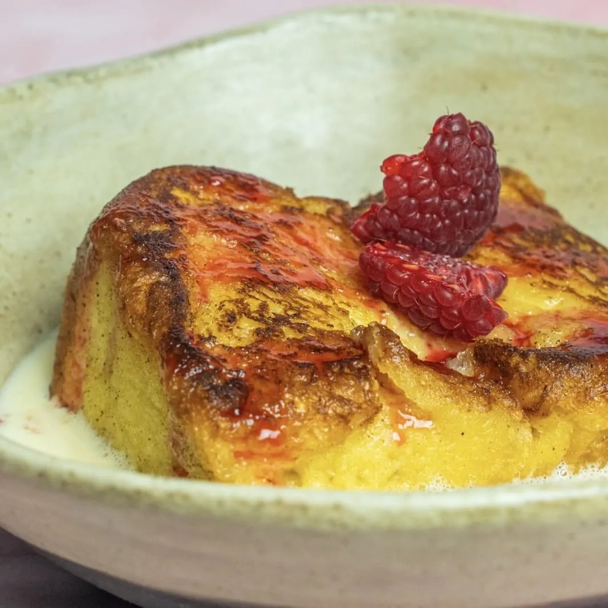

⏲ 20 minuts 👥 8 unitats

Sigueu o no creients, us proposem una segona recepta tradicional en aquesta època de Quaresma. En
alguna ocasió ja us hem fet alguna versió d’aquestes postres, però ara us proposem la versió més
tradicional, amb els nostres matisos. Animeu-vos a fer aquestes torradetes de Santa Teresa per
família i amics, segur que repetireu!
Ingredients:
- 200ml de nata
- 100ml de llet
- Pell de taronja i llimona
- Una branca de canyella
- 3 rovells d'ou
- 40g de sucre
- 2 cullerades de mel
- 100g de groselles
- Pà brioix
- Mantega
- Escalfem la nata i la llet amb una branca de canyella, pell de taronja i llimona. Retirem quan arribi a ebullició i deixem infusionar.
- Batem els rovells d’ous amb el sucre fins que quedin blanquejats, i després afegim els làctics infusionats, prèviament colats.
- Fem un tall generós de pa de brioix i el dipositem durant uns minuts dins la mescla de llet i nata perquè s’impregni, sense passar-nos i el deixem reposar uns minuts.
- Coem a foc lent els gerds i la mel, fins a aconseguir una salsa de gerds.
- En una paella, fonem una bona quantitat de mantega i marquem el nostre pa de brioix per totes les cares, fins que estigui daurat i cruixent.
- Finalment, emplatem amb una base de la nata, el brioix i la salsa de gerds.